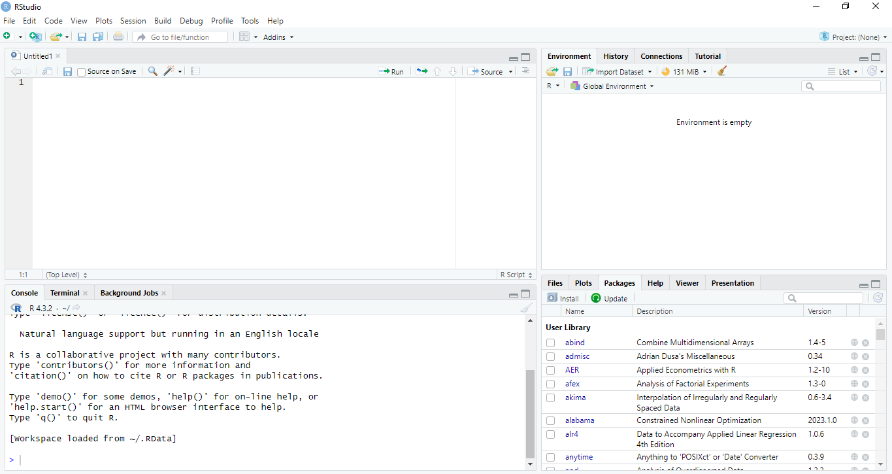

1 Pengenalan R dan RStudio
1.1 Pendahuluan
Alat utama yang akan kita gunakan untuk analisis ekonomi dan keuangan dalam buku ini adalah R (Team (2023)) dan RStudio. RStudio bukan R, juga tidak menyertakan R saat Anda mengunduh dan menginstalnya. Oleh karena itu, R dan RStudio perlu diunduh dan diinstal terpisah.
R dapat diunduh di R Project for Statistical Computing. Di situs ini juga terdapat tautan ke buku, manual, R Journal dan lain-lain untuk belajar R. Silakan unduh R sesuai dengan platform komputasi Anda Windows, Macintosh atau Unix. Gratis! Sedangkan untuk menginstal RStudio silakan kunjungi posit.Juga gratis! Untuk pengenalan ini, saya berasumsi bahwa Anda telah mengunduh dan menginstal R dan RStudio di komputer Anda.
R tidak punya pengembang antarmuka pengguna grafis (GUI) yang sesuai dengan keinginan pengguna seperti halnya program SPSS atau Stata. GUI bawaan R terlihat lebih mirip dengan konsol DOS lama (lihat Gambar 1.1). Oleh karena itu, dalam buku ini kita akan fokus menggunakan R melalui antarmuka RStudio. Dengan RStudio, R lebih mudah digunakan dan lebih mirip dengan program SPSS atau Stata.
Hubungan antara R dan RStudio seperti mesin mobil dan dashboard (Ismay and Kim 2019). Bahasa R dapat diumpamakan sebagai mesin mobil, sedangkan RStudio sebagai dasbornya sehingga kita mudah mengkonfigurasi dan mengontrol kerja mesin.
Di buku ini, saya tidak menunjukkan fitur-fitur R dan RStudio yang sangat banyak secara mendetil. Bab ini hanya berisi contoh mengoperasikan R dan RStudio, metode untuk menginstal paket R dan paket pihak ketiga yang diperlukan untuk digunakan dalam buku ini di bab berikutnya.
1.2 Tata Letak RStudio
Sebagai permulaan, kita akan mempelajari tata letak RStudio dan elemen inti yang akan kita gunakan. Saat Anda memulai RStudio untuk pertama kalinya, Anda akan melihat tiga panel (lihat Gambar 1.2).
- Panel kiri menunjukkan konsol R. Panel ini seperti GUI R yang kita lihat sebelumnnya. Di panel ini kita bisa mengetikkan perintah untuk R.
- Panel kanan atas berisi lima tab: Environment, History, Connections, Build dan Tutorial. Di dalam Environment semua kumpulan data, variabel, model, objek, dan plot akan disimpan.
- Panel kanan bawah menampilkan enam tab: File, Plots, Packages, Help, Viewer dan Presentation. Tab Plots adalah tempat mencetak atau mengekspor plot dan grafik. Tab Packages menunjukkan berbagai paket yang terpasang di komputer Anda. Tab yang penting disini adalah Help: kita bisa mencari informasi jika kita lupa dengan fungsi-fungsi tertentu di dalam R. Anda dapat mengklik setiap tab untuk menelusuri berbagai fitur di dalamnya.

1.3 Membuat Projek
Setelah Anda membuka RStudio, langkah pertama yang sebaiknya Anda lakukan adalah membuat file projek. Sebuah projek adalah tempat terpusat untuk semua objek, grafik dan skrip untuk projek kita. Dengan membuat projek, kita tidak perlu memikirkan lagi direktori kerja untuk menyimpan perhitungan, file, history dan data. Semua akan disimpan di dalam folder projek ini.
Folder projek ini dapat disamakan dengan folder fisik tempat Anda menyimpan riset topik tertentu (misal projek economic growth, financial engineering). Masing-masing projek harus dibuatkan folder terpisah. Saat Anda ingin mengerjakan projek, Anda membuka folder Anda (dan menutup projek Anda setelah selesai). Saat kembali, Anda dapat membuka kembali folder dan melanjutkan dari bagian terakhir yang Anda tinggalkan. Projek RStudio juga serupa dalam hal itu.
Langkah-langkah untuk membuat sebuah projek adalah:
- Di RStudio pilih “File” lalu “New Project.” Atau klik tanda R di pojok kanan atas, kemudian “New Project”.
- Selanjutnya pilih opsi pertama “New Directory” - ini akan membuat folder baru di komputer Anda.
- Di tahap berikutnya pilih “New Directory” atau “Existing Directory”. Tergantung pada opsi yang Anda pilih, Anda akan memiliki beberapa pilihan di mana Anda ingin menempatkan proyek ini.
- Selanjutnya beri nama projek sesuka Anda.
- Klik tombol “Create Project”.
1.4 R dalam Gaya “Tanya Jawab”
Kita dapat menggunakan R secara interaktif atau R dalam gaya “tanya jawab” (Dalgaard (2008)). Caranya dengan mengetik langsung di konsol panel di sebelah kiri (lihat Gambar 1.2). Kita menggunakan gaya ini ketika hanya penghitungan rumus tunggal yang diperlukan.
R berorientasi objek, artinya kita dapat membuat objek dalam sesi R, dan memanipulasi objek tersebut berdasarkan namanya. Sebagai ilustrasi, misalnya Anda ingin menghitung 1 + 2, kita tulis setelah > 1+2 dan tekan Enter. Hasilnya tigakan? Urutan aturan operasi berlaku dan banyak fungsi matematika lain seperti akar kuadrat, sqrt, juga dapat diterapkan seperti yang diperlihatkan di contoh berikutnya.
Selanjutnya kita mungkin ingin memberi nama dan menyimpan hasil perhitungan yang kita lakukan sebagai objek atau variabel. Misalnya tilu sebagai evaluasi ekspresi 1 + 2, lalu mencetaknya. Maka kita tuliskan tilu <- 1+2. Artinya komputer menghitung 1 + 2 dan menyimpan hasilnya dalam variabel bernama tilu. Pada saat kita mengetikkan tilu <- 1+2, dan menekan Enter, seolah-olah tidak terjadi apa-apa pada RStudio. Untuk memanggil variabel tilu kita ketikkan lagi tilu dan tekan Enter. Perhatikan operator penugasan <- sebagai ciri khas R, walaupun kita bisa juga menggunakan tanda =. Perhatikan di buku ini perintah ditampilkan dalam kotak abu-abu, sedangkan luarannya ada dibawahnya diawali [1] atau [1,]. Semua setelah tanda # adalah komentar dan tidak dievaluasi oleh R. Dengan cara yang sama kita membuat variabel opat = 2+2.
tilu <- 1+2
tilu # memanggil variabel tilu[1] 3opat = 2+2
opat[1] 4Setelah kita mendefinisikan suatu variabel, kita dapat melakukan perhitungan lanjutan dengan variabel tersebut. Di dalam penelitian ekonomi dan keuangan hal ini sering kita lakukan misalnya menghitung return saham, GDP perkapita, inflasi dan lain-lain, yang baru bisa kita dapatkan setelah melakukan penghitungan lanjutan dari data mentah yang didapat.
Operasi lain yang bisa dilakukan antara lain aritmatika (+, -, /, ^,…), operator perbandingan (==, <=,…), operator logika (&, |, !,…) dan fungsi matematika dasar seperti sin, cos, exp dan sqrt.
1.5 Vektor
Variabel paling dasar dalam R adalah vektor. Vektor R adalah barisan nilai yang bertipe sama. Misalnya, untuk membuat vektor lima dimensi beranggotakan angka 10, dan kita beri nama lima10, maka ketikkan lima10 <-rep(10,5) di konsol dan tekan Enter. Maka lima10 adalah vektor dengan lima elemen masing-masing 10; untuk melihatnya kita ketik lima10 dan tekan Enter. Fungsi rep merupakan fungsi khusus dari R yang merupakan kependekan dari pengulangan (repeat). Argumennya ditulis sebagai rep(apa yang diulang, berapa kali pengulangan).
lima10 <-rep(10,5)
lima10[1] 10 10 10 10 10Jika a dan b bilangan bulat, perintah a:b akan membuat vektor bilangan bulat dari a ke b.
vektor17 <- 1:7
vektor17[1] 1 2 3 4 5 6 7Untuk lebih bisa mengontrol vektor yang dibuat, Anda gunakan perintah seq.
sek305 <- seq(1,30,5) # membuat vektor bilangan dari 1-30 dengan beda 5
sek305[1] 1 6 11 16 21 26sek301 <- seq(30,1,-5) # membuat vektor bilangan dari 30-1 dengan beda -5
sek301[1] 30 25 20 15 10 5Elemen vektor dapat diindeks dengan tanda kurung [ ]. Argumen braket dapat berupa bilangan bulat tunggal atau vektor.
Untuk perintah terakhir saya meminta elemen vektor sek305 yang pertama, keempat, kelima, dan kesepuluh. Karena tidak ada elemen kesepuluh di dalam vektor sek305, maka hasilnya NA (not available). Seringkali kita juga ingin mencari elemen suatu vektor yang memenuhi suatu kondisi tertentu, misalnya elemen sek305 yang kurang dari 10. Hal ini dilakukan dengan meminta indeks yang memenuhi
sek305[1] 1 6 11 16 21 26which(sek305 < 10) # elemen keberapa yang kurang dari 10[1] 1 2index <- which(sek305 < 10) # bilangan berapa saja yang kurang dari 10 dari vektor sek305
sek305[index][1] 1 6Vektor dapat terdiri dari angka, karakter dan bahkan rangkaian karakter. Contoh:
studiku <- c("Scientific", "Programming", "using", "R", "kereen!") # perhatikan penggunanaan ""
studiku[1] "Scientific" "Programming" "using" "R" "kereen!" studiku[c(2,3,4)][1] "Programming" "using" "R" studiku[c(2,5)][1] "Programming" "kereen!" Untuk membuat matriks juga dapat dilakukan dengan mudah. Misalnya, mat.pi.4.5 <-matrix(pi, nrow=4,ncol=5) adalah perintah untuk membuat matriks dimensi 4 × 5 dengan nama mat.pi.4.5 dengan semua entri \(\pi\). Sekali lagi, untuk melihat hasilnya, ketik mat.pi.4.5 dan tekan Enter. R peka penulisan huruf besar-kecil. Jadi mat.pi.4.5 dan mat.Pi.4.5 memiliki arti yang berbeda. Hampir semua perintah menggunakan huruf kecil, kecuali perintah View() dan beberapa perintah dari package tertentu.
mat.pi.4.5 <-matrix(pi, nrow=4,ncol=5)
mat.pi.4.5 [,1] [,2] [,3] [,4] [,5]
[1,] 3.141593 3.141593 3.141593 3.141593 3.141593
[2,] 3.141593 3.141593 3.141593 3.141593 3.141593
[3,] 3.141593 3.141593 3.141593 3.141593 3.141593
[4,] 3.141593 3.141593 3.141593 3.141593 3.1415931.6 Saatnya menggunakan skrip
Meskipun kita dapat mengetik dan mengevaluasi semua kemungkinan ekspresi R langsung di konsol, tetapi akan lebih mudah untuk menulis skrip yang berupa kumpulan ekspresi R yang ingin kita evaluasi secara berurutan. APalagi penghitungan statistik biasanya melibatkan banyak baris kode. Jika demikian saatnya kita beralih menggunakan skrip (script). Ada juga yang menyebut skrip dengan program atau kode.
Penggunaan file skrip (file .R) dapat membantu menjalankan beberapa langkah kode sekaligus. File skrip terletak di sudut kiri atas jendela RStudio Anda atau file source. Untuk membuat skrip baru, Anda dapat mengklik File > New File > R Script atau dengan shortcut Ctrl+Shift+N. Maka dilayar RStudio akan muncul layar baru di kiri atas sehingga Anda sekarang punya empat panel. Inilah salah satu keunggulan R dibandingkan perangkat lunak point and click yaitu Anda dapat menyimpan pekerjaan Anda sebagai skrip. Lihat Gambar 1.3)!
File source memungkinkan Anda mengetikkan kode R dan kemudian mengevaluasinya, sehingga terkadang disebut “mengirim perintah ke konsol” - atau memindahkan pernyataan R dari jendela source ke konsol. Penggunaan file skrip memungkinkan Anda memperbaiki kesalahan kode dengan lebih cepat dan kemudian menjalankan kembali kode Anda tanpa perlu mengetik ulang semuanya dari awal.

Skrip ini setara dengan file sintaks di Stata: skrip menyajikan kode yang diperlukan untuk menghasilkan analisis yang diperlukan. Anda dapat menyimpan dan membagikan pekerjaan Anda sebagai skrip yang berisi kode yang dapat dijalankan lain waktu. Hal ini sangat berguna sebagai catatan analisis yang Anda lakukan, melakukan verifikasi analisis atau untuk replikasi studi.
Untuk menjalankan kode dalam skrip R, untuk satu baris kode, letakkan tetikus di depan kode, untuk satu blok baris, pilih kode tersebut, lalu klik tombol Run atau tekan Ctrl + Enter di Windows sistem. Dalam skrip R, dimungkinkan untuk menambahkan komentar menggunakan #. Segala sesuatu setelah tanda # akan dianggap sebagai komentar dan tidak akan dijalankan oleh R.
Di awal setiap skrip R, sebaiknya diketikkan paket-paket yang diperlukan untuk mengimplementasikan kode dalam file. Setelah menulis kode untuk memuat paket dengan fungsi library(), Anda dapat menambahkan, sebagai komentar, kata kunci untuk mengingatkan tentang penggunaan paket. Ini akan membantu kita mengingat isi file dan menjelaskan kepada orang lain apa yang diperlukan untuk mengimplementasikan kode dalam skrip R.
Ini juga merupakan kebiasan baik untuk mendeskripsikan proyek dan menulis komentar singkat di fungsi-fungsi yang kita buat. Sekali lagi ini berguna bagi penulis skrip dan bagi orang ketiga yang akan membaca kode tersebut.
1.7 Manajemen Data dan Projek di R
R adalah bahasa pemrograman berorientasi objek. Saat Anda membukanya, Anda memiliki lingkungan (Environment) kosong yang dapat diisi dengan objek sebanyak kemampuan memori komputer Anda. Segala sesuatu yang ingin Anda simpan atau manipulasi di lain waktu perlu didefinisikan sebagai objek di lingkungan ini. Termasuk disini file data, objek atau hasil model, grafik, dan sebagainya. Artinya, tidak seperti perangkat lunak statistik standar, yang biasanya hanya mengizinkan analis untuk membuka satu kumpulan data, R memungkinkan analis untuk bekerja dengan beberapa file data secara bersamaan.
Ekstensi file R untuk file data adalah .RData. Anda dapat menyimpan satu atau lebih objek dalam file tersebut menggunakan fungsi File > Save (Ctrl + S). Lokasi penyimpanan file ini berada di direktori yang sama dengan file proyek .Rproj Anda. Di dalam RData tersimpan hasil model, grafik, atau objek yang lain. Hal ini sangat berguna ketika model membutuhkan waktu lama untuk dalam penghitungannya. Hasil tersebut dapat disimpan dan digunakan kembali nanti.
1.8 Paket-Paket R
R bekerja melalui paket-paket (packages) termasuk paket dasar dan ribuan paket tambahan. Paket ini mirip dengan aplikasi di ponsel Anda, yang bisa ditambahkan pada ponsel untuk meningkatkan fungsionalitas ponsel Anda. Paket dibuat oleh pengguna dan dibagikan kepada pengguna lain.
Anda perlu mengunduh paket tertentu untuk menyediakan perintah yang diperlukan dan dapat menjalankan model atau analisis tertentu jika fungsi itu tidak tersedia secara default. Paket-paket itu memerlukan tiga langkah untuk menggunakannya. Pertama, kita harus menginstal paket itu sendiri, memuatnya dari library, dan terakhir memanggil salah satu fungsi paket tersebut.
Paket dapat diunduh di CRAN (Comprehensive R Archive Network). Misalnya Anda akan menginstal paket data panel ekonometrik plm (Croissant et al. (2023)), perintah RStudio berikut akan menginstal paket plm di RStudio versi lokal Anda:
install.packages("plm")atau bisa juga melalui opsi drop-down (Tools -> Install Package). Paket di CRAN telah dievaluasi untuk memastikan paket tersebut berfungsi di seluruh platform.
Paket bisa juga diinstall dari Github yaitu untuk paket-paket yang tidak terdapat di CRAN. Misalnya Anda akan menginstal paket rbbt (Dunnington (2023)) yaitu konektor R ke Better Bibtex untuk Zotero. Paket tersebut dapat diinstal menggunakan fungsi devtools::install_ github (Wickham et al. (2022)). Sebelumnya Anda harus menginstall devtools terlebih dahulu.
install.packages("devtools")
require(devtools)
devtools::install_github("paleolimbot/rbbt")Sekali sebuah paket sudah diinstal, maka tidak perlu diinstal lagi seperti halnya aplikasi di ponsel Anda. Tetapi perlu diupdate secara rutin karena pengembang paket tersebut mungkin menambahkan fungsionalitas baru. Untuk mengupdate gunakan opsi drop-down (Tools -> Check for Package Updates).
RStudio tidak menyimpan paket yang terinstal di memori kerja aktifnya ketika dimatikan. Oleh karena itu, untuk setiap sesi R yang baru, paket yang diperlukan perlu dimuat (bukan diinstal ulang, cukup dimuat ulang) dengan fungsi library ("nama-paket") atau require("nama-paket").
1.9 Mengimpor Data ke dalam R
Dalam praktik analisis data, sering kali data disimpan dalam berbagai format. Selain itu kita mungkin tidak memasukkan data langsung ke R, tetapi menggunakan ke worksheet seperti Google Sheets atau bahkan menggunakan program statistik seperti SPSS. R dapat membaca berbagai jenis file data seperti free format text files (txt), comma separated value files (csv), file Excel, file SPSS, file SAS, dan file Stata.
Data yang disimpan dalam file csv dapat diunggah ke RStudio dengan dua cara yang relatif sederhana:
- Untuk file yang disimpan secara lokal di folder projek pengguna, perintah
read.csvakan mengunggah file tersebut. Sebagai contoh, memasukkan perintah berikut akan mengunggah dan menyimpan file csv bernama inequality.csv di RStudio:
ineqdata <- read.csv("inequality.csv")Dalam contoh ini, perhatikan sintaksisnya: setelah perintah read.csv dan tanda kurung buka, nama file diberikan di dalam tanda kutip diikuti dengan tanda kurung tutup. Selain itu, data disimpan dengan nama ineqdata dengan menggunakan inisial ineqdata <-. Data set harus diberi nama sedemikian rupa sehingga dapat direferensikan dalam perintah berikutnya, di mana pilihan nama yang sesuai ditentukan oleh pengguna, bergantung pada konteksnya.
- Jika data dalam format lain, kita perlu menginstal paket untuk mengimpor data misalnya paket foreign (Team et al. (2023)) yang berfungsi untuk membaca dan menulis file data dari SAS, SPSS dan Stata. Paket ini dapat diinstal dengan perintah
install.packages("foreign"). Untuk melakukan impor klik File > Import Dataset > From Excel, From Stata, From SPSS dan lain-lain, pilih sesuai jenis data Anda.
1.10 Fitur Help
Bab ini tidak mencakup semua fitur R, dan bahkan fitur yang dicakupnya pun tidak dibahas secara detil. Untuk mengetahui lebih lanjut tentang perintah R atau fungsi x, Anda dapat mengetikkan help(x) atau cukup ?x. Jika Anda tidak dapat mengingat nama pasti dari perintah atau fungsi yang Anda minati, maka help.search("x") akan mencari judul, nama, alias, dan entri kata kunci dari file bantuan yang tersedia untuk frasa x.
Fitur Help di RStudio adalah bagian yang sangat membantu untuk mempelajari cara menggunakan perintah-perintah tertentu di RStudio. Anda disarankan untuk mengeksplorasi lebih lanjut panel Help yang terletak di kanan bawah RStudio standar atau klik Help > R Help, yang akan membuka tautan ke sejumlah manual, khususnya yang sangat direkomendasikan An Introduction to R. Selain itu ada banyak rujukan bagus untuk mempelajari R dan RStudio misalnya Crawley (2012), Wickham and Grolemund (2017) dan Verzani (2011). Banyak juga rujukan lain yang bisa diakses secara online.
Ketika Anda selesai menggunakan R, Anda dapat keluar dengan perintah q(). R menanyakan apakah Anda ingin menyimpan workspace atau ruang kerja Anda, yang berisi semua objek yang telah Anda buat selama sesi berlangsung. Jika Anda memilih untuk melakukannya maka semua objek akan disimpan sebagai objek biner terkompresi.